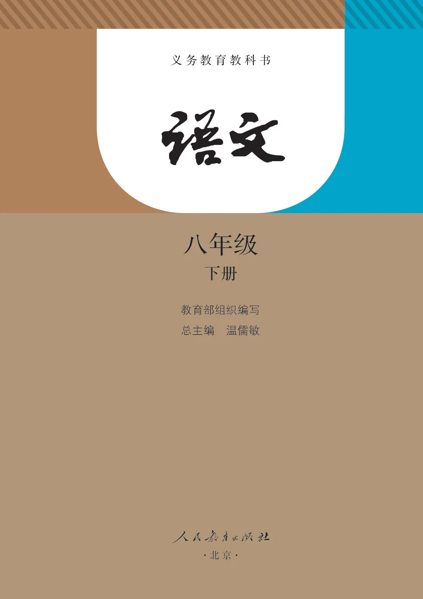
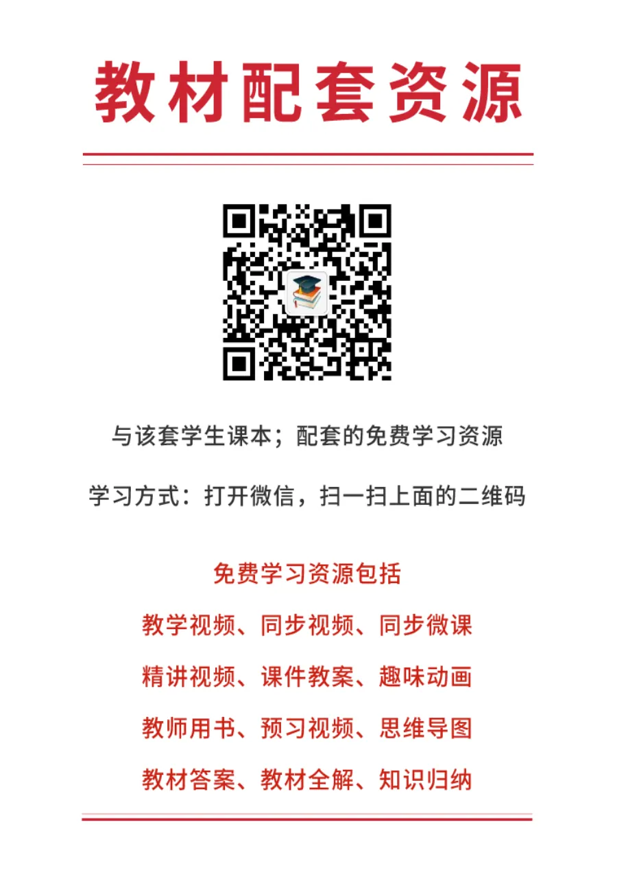
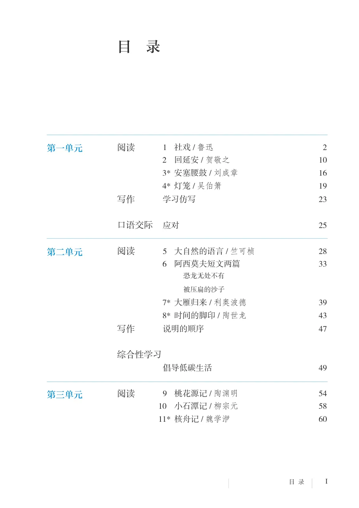
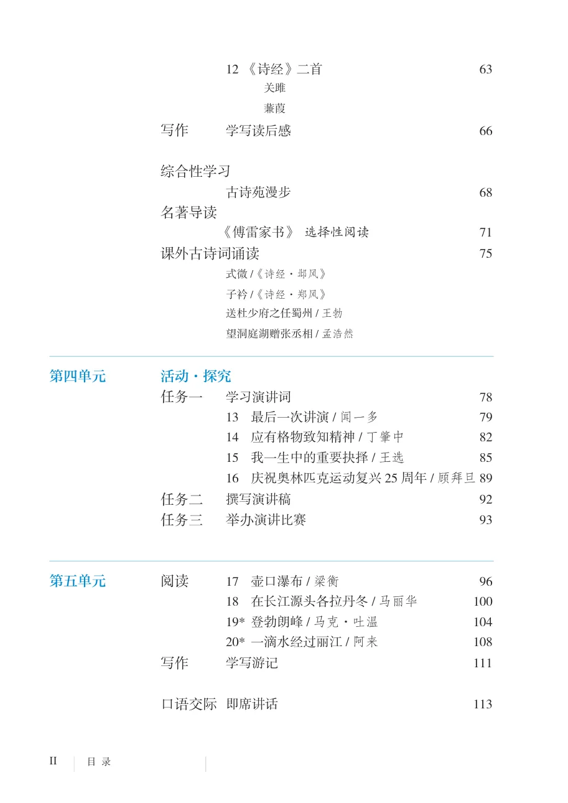
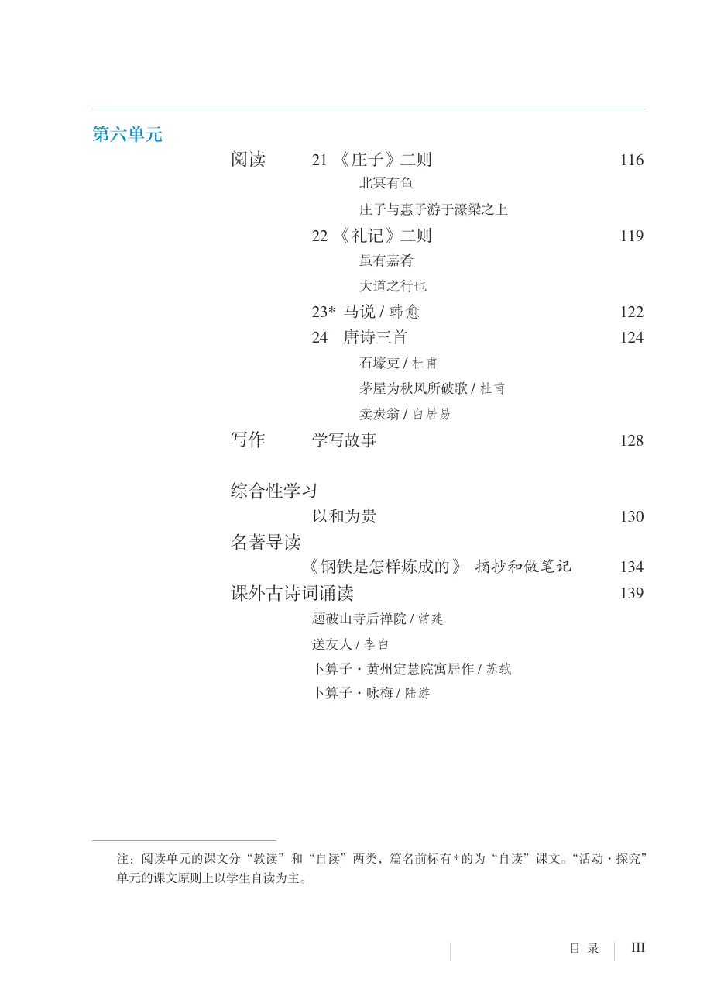

PDF 第 1 页
八年级 下册 义务教育教科书 全国优秀教材特等奖
APPENDIX
本页仅收录不属于六个教学单元的教材资料：封面、扉页、版权与目录、空白过渡页、后记和封底。单元内的写作、口语交际、综合性学习、名著导读等均已归入对应单元。
教材资料
八年级 下册 义务教育教科书 全国优秀教材特等奖
八年级 下册 义务教育教科书 ·北 京· 教育部组织编写 总主编 温儒敏
义务教育教科书 语文 八年级 下册 教育部组织编写 出 版 （北京市海淀区中关村南大街17号院1号楼 邮编：100081） 网 址 http://www.pep.com.cn 重 印 ×××出版社 发 行 ×××新华书店 印 刷 ×××印装 版 次 2017年12月第1版 印 次 年 月第 次印刷 开 本 787毫米×1092毫米 1/16 印 张 9.25 字 数 163千字 印 数 册 书 号 ISBN 978-7-107-32361-4 定 价 元 定价批号 ××号 版权所有·未经许可不得采用任何方式擅自复制或使用本产品任何部分·违者必究 如发现内容质量问题，请登录中小学教材意见反馈平台：jcyjfk.pep.com.cn 如发现印、装质量问题，影响阅读，请与×××联系调换。电话：×××-×××××××× 总 主 编：温儒敏 初中主编：王本华（执行） 曹文轩 顾之川 张笑庸 编写人员：（以姓氏笔画为序） 王 涧 王 漫 陈尔杰 胡 晓 顾之川 韩 涵 靳 彤 翟小宁 责任编辑：李世中 陈恒舒 美术编辑：张 蓓 惠凌峰
目 录 第一单元 第二单元 第三单元 目 录 阅读
1 社戏/ 鲁迅
2 回延安/ 贺敬之
3* 安塞腰鼓/ 刘成章
4* 灯笼/ 吴伯箫
写作 学习仿写 口语交际 应对 阅读
5 大自然的语言/ 竺可桢
6 阿西莫夫短文两篇
恐龙无处不有 被压扁的沙子
7* 大雁归来/ 利奥波德
8* 时间的脚印/ 陶世龙
写作 说明的顺序 综合性学习 倡导低碳生活 阅读
9 桃花源记/ 陶渊明
10 小石潭记/ 柳宗元
11* 核舟记/ 魏学洢
目 录 第四单元 第五单元
12 《诗经》二首
关雎 蒹葭 写作 学写读后感 综合性学习 古诗苑漫步 名著导读 《傅雷家书》 选择性阅读 课外古诗词诵读 式微/《诗经·邶风》 子衿/《诗经·郑风》 送杜少府之任蜀州/ 王勃 望洞庭湖赠张丞相/ 孟浩然 活动·探究
学习演讲词
13 最后一次讲演/ 闻一多
14 应有格物致知精神/ 丁肇中
15 我一生中的重要抉择/ 王选
16 庆祝奥林匹克运动复兴25 周年/ 顾拜旦 89
撰写演讲稿
举办演讲比赛 阅读
17 壶口瀑布/ 梁衡
18 在长江源头各拉丹冬/ 马丽华
19* 登勃朗峰/ 马克·吐温
20* 一滴水经过丽江/ 阿来
写作 学写游记 口语交际 即席讲话
目 录 第六单元 阅读
21 《庄子》二则
北冥有鱼 庄子与惠子游于濠梁之上
22 《礼记》二则
虽有嘉肴 大道之行也
23* 马说/ 韩愈
24 唐诗三首
石壕吏/ 杜甫 茅屋为秋风所破歌/ 杜甫 卖炭翁/ 白居易 写作 学写故事 综合性学习 以和为贵 名著导读 《钢铁是怎样炼成的》 摘抄和做笔记 课外古诗词诵读 题破山寺后禅院/ 常建 送友人/ 李白 卜算子·黄州定慧院寓居作/ 苏轼 卜算子·咏梅/ 陆游 注：阅读单元的课文分“教读”和“自读”两类，篇名前标有*的为“自读”课文。“活动·探究” 单元的课文原则上以学生自读为主。
教材资料
后 记 《义务教育教科书 语文》（七~九年级）由教育部组织编写，北京大学中 文系温儒敏教授担任总主编。 王宁、张联荣、柳士镇、方智范、梁捷、郑桂华、陈双新、王岱等审查专 家提出了很多宝贵的修改意见，对教科书的修改完善给予了悉心指导和倾力帮 助。在教育部的组织下，广大一线优秀教师反馈了很多意见和建议，保证了教 学的适切性。在试教试用过程中，我们得到了重庆市、江苏省、湖南省、陕西 省等省（市）教育科学研究院（所）、教研室及一线教师的大力支持，他们的 意见和建议为教科书的进一步完善提供了保障。 人民教育出版社承担了教科书的编辑出版工作，在组织编写、试教试用等 方面给予了全方位的协助。人民教育出版社中语室全体同仁始终是教科书编写 的中坚力量。感谢吕敬人等为本套教科书的整体设计提供了艺术指导，感谢丁 永康为本套教科书“读读写写”栏目书写了硬笔书法范字。刘晓翔承担本书的 美术设计工作，李晨、查家伍、李旻为本书绘制插图，吕旻、李宏庆为本书设 计封面。此外，对教科书的编写、出版提供过帮助的同仁和社会各界朋友还有 很多，在此一并表示诚挚的谢意。 期盼使用本套教科书的广大师生、家长提出宝贵意见，我们将集思广益， 不断修订，使教科书趋于完善。 联系方式 电 话：010-58758618 电子邮箱：jcfk@pep.com.cn 编者
2017年11月
YUWEN YIWU JIAOYU JIAOKESHU 八年级 下册 语文 ® 定价： 元 绿色印刷产品 绿色印刷产品
SOURCE PAGES





